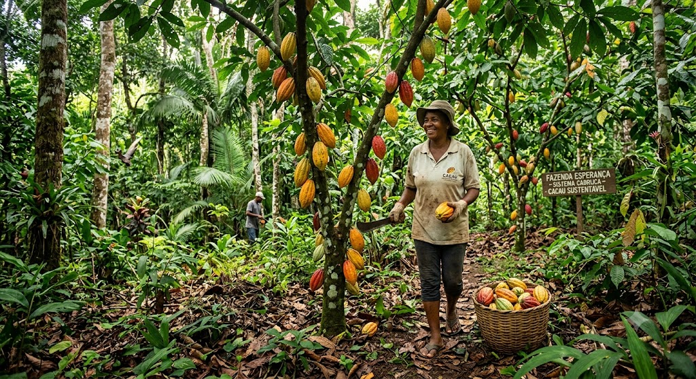
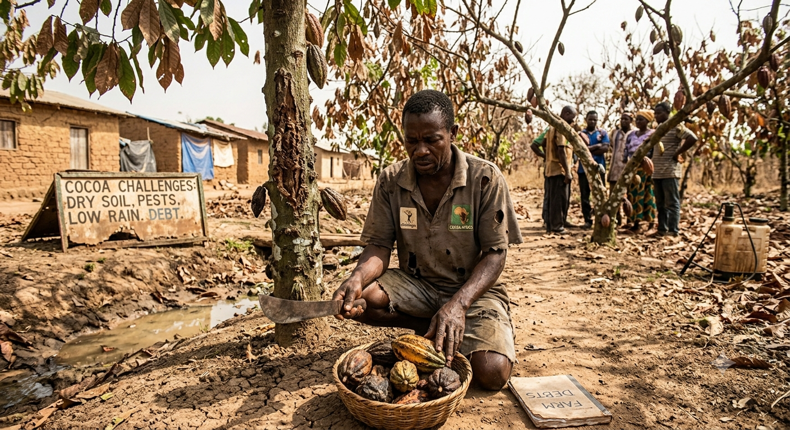
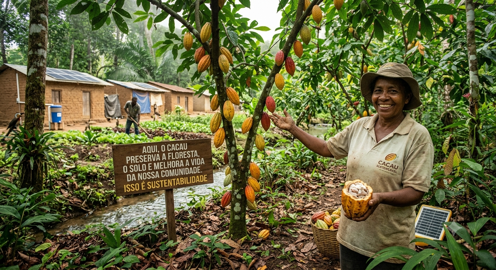

Cada pedaço de chocolate carrega uma história que começa muito antes de chegar à prateleira.
Enquanto a busca global por cacau impulsiona o desmatamento e o empobrecimento do solo em diversas regiões do mundo,
uma nova forma de cultivar renasce nas florestas tropicais.
O cultivo em sistemas agroflorestais mostra que é possível produzir uma das maiores paixões do planeta
recuperando a vegetação nativa, protegendo a biodiversidade e garantindo renda justa para quem vive da terra.
A escolha de como essa história continua está em cada decisão de consumo.

A expansão de monoculturas tradicionais devasta florestas tropicais na África Ocidental e na América Latina, destruindo habitats naturais e acelerando a perda de espécies.
Cultivar o cacau sem a proteção de árvores maiores esgota os nutrientes da terra rapidamente, exigindo o uso intensivo de fertilizantes sintéticos e defensivos agrícolas.
O aumento das temperaturas globais, somado a secas prolongadas e alterações nos regimes de chuva, reduz drasticamente a produtividade das lavouras e favorece o surgimento de pragas.
A volatilidade dos preços do cacau no mercado internacional faz com que a maioria dos pequenos agricultores viva abaixo da linha da pobreza, recebendo apenas uma fração do valor final do chocolate.

A transformação do cultivo do cacau começa na terra por meio de práticas regenerativas,
como os Sistemas Agroflorestais. Ao integrar os cacaueiros a árvores nativas e frutíferas,
esses modelos imitam a floresta natural, mantêm a umidade do solo e protegem a biodiversidade
sem a necessidade de desmatar.
No Brasil, o grande destaque é o Sistema Cabruca, típico do Sul da Bahia, onde o cacau cresce sob a sombra de árvores
seculares da Mata Atlântica, funcionando como um corredor ecológico. Somado ao uso de adubação orgânica e controle biológico
de pragas, esse cultivo sustentável recupera os recursos hídricos e garante renda extra aos agricultores com a venda de outras
culturas no mesmo espaço.
Essa abordagem relaciona-se diretamente com a sustentabilidade por equilibrar os pilares ambiental, econômico e social na mesma propriedade.
No âmbito ambiental, o cultivo sombreado regenera a terra ao invés de destruí-la: mantém a floresta em pé, preserva nascentes,
protege a fauna nativa e captura carbono da atmosfera, reduzindo drasticamente o uso de químicos nocivos.
Do ponto de vista socioeconômico,
a diversificação de plantas no mesmo espaço oferece aos pequenos produtores segurança financeira contra oscilações no preço do cacau e garante
alimentos para suas famílias. Em vez de ser um vetor de desmatamento e pobreza,
o cacau torna-se uma ferramenta de restauração da natureza e de dignidade no campo.
